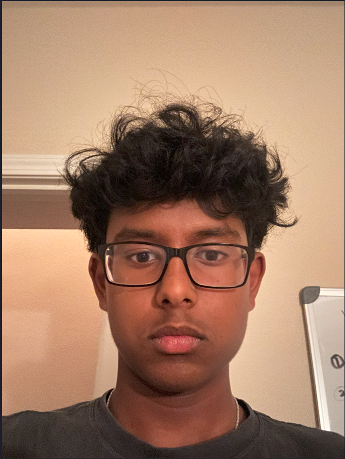

About Me
5 Adjectives
Adaptive, Curious, Adventurous, Athletic, Benevolent
Introduction/Career Goals
Hello, my name is Vishwak but I am commonly known as Vish. I was born in India and raised in America. I am looking forward to improving myself through this program in various ways and obtaining some new experiences. Ever since I was little, I had an unparalleled curiosity, so science helped me explain the world, sating my curiosity. It made me realize what I like to do and experimenting in science was very intriguing to me.
What lies in my future is a career in astronautical engineering and possibly in space. All the experiences that I have experienced, from watching shows taking place in space, to my imagination chasing the wonders of the world, vibrate toward this goal. I am currently propelling forward by absorbing all the knowledge related to my career from both school and outside. Physics is a main aspect in my goal, so I will divulge in it understanding all aspects to it to the best of my understanding.
Not only this, but I am taking engineering courses with rigor in community colleges to get prepared and excel without looking back. I am looking forward to the future and I am excited to see what it holds for me.
Strengths/Skills
Some of my hobbies include playing basketball, working on science projects, programming, coding, and just watching TV. Playing basketball is a chance to work hard and sweat for my team and myself while doing science projects entertained my curiosity and became something fun for me to do and at the same time allowed me to learn many things.
Coding and programming are skills that are both very useful and a way to explore the world differently. My skills are Python, HTML, CSS, and JavaScript. Every day, I continue to dive into the world of computer science further enriching my knowledge of different languages and other aspects.
More than that, some of my strengths are my curiosity and adaptability that are incorporated in my daily life. My adaptability helps me everywhere whether I have a pop quiz, a change in deadline, or while playing basketball. In particular, playing basketball has improved my adaptability throughout the years.
My experiences have shaped me allowing me to understand myself and the world with clarity. Some of these experiences are the times I slacked off with my studying and took a test, but as expected, it didn't go well. Humans' big advantage over all the other species on this planet is their ability to learn from their mistakes and that is what I did in many situations. Many more things are sure to be a part of me in the future and I am looking forward to evolving and becoming the best me.